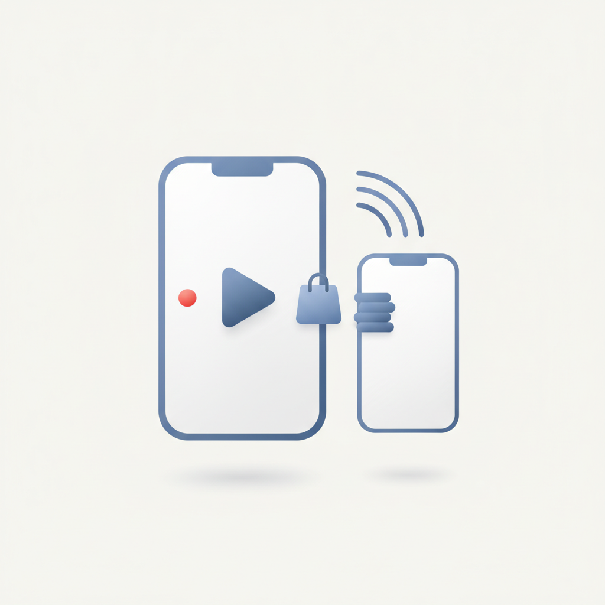
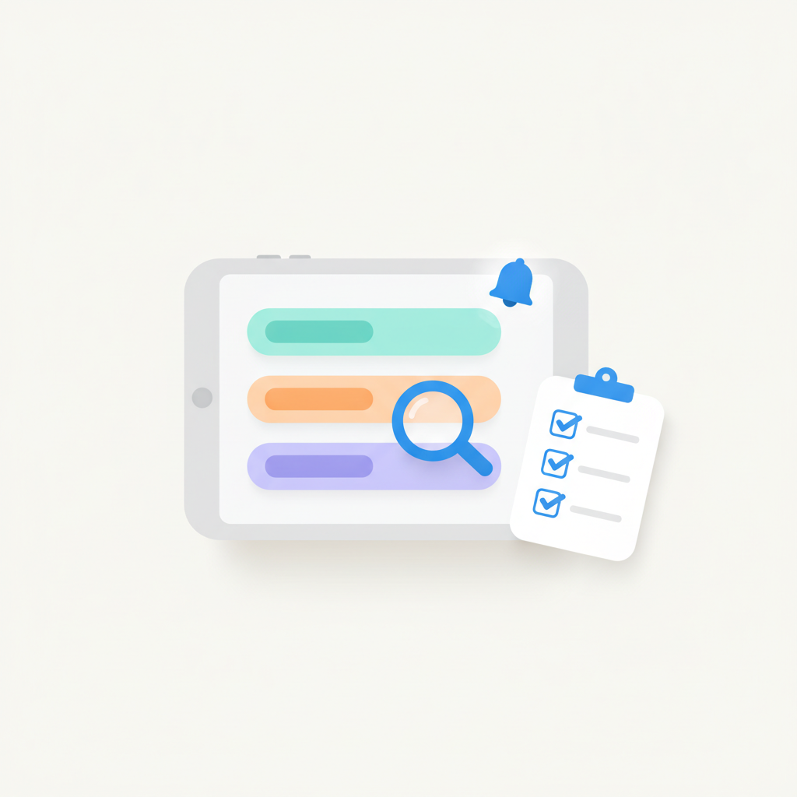
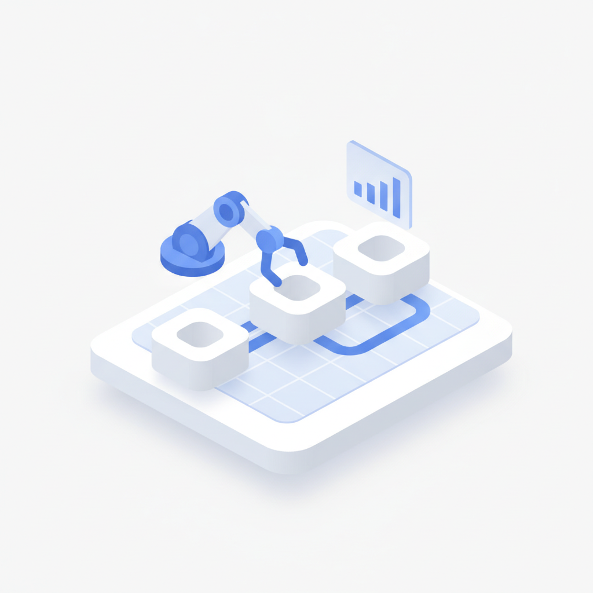
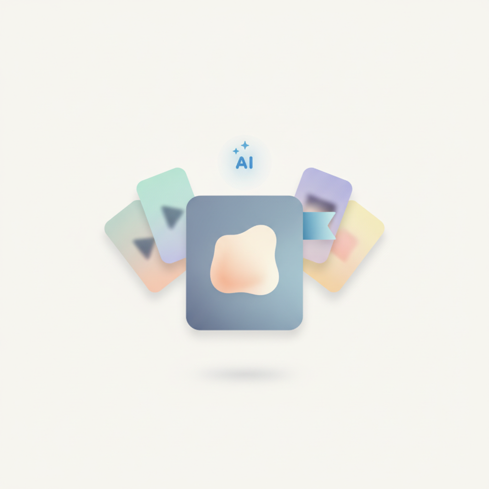
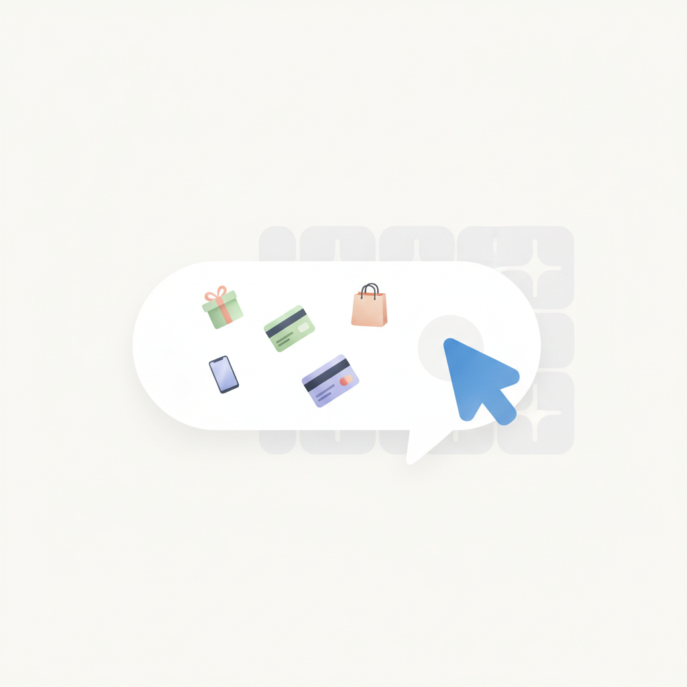
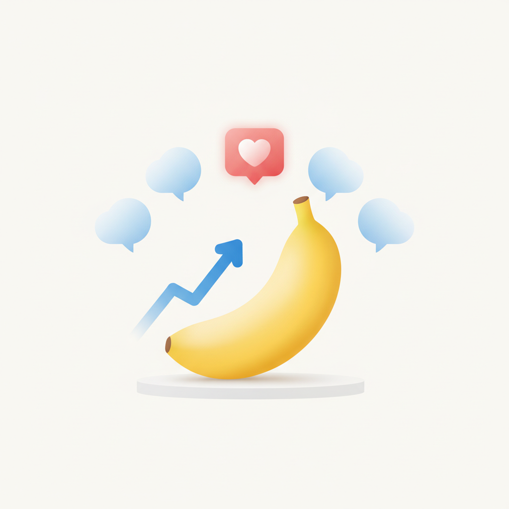
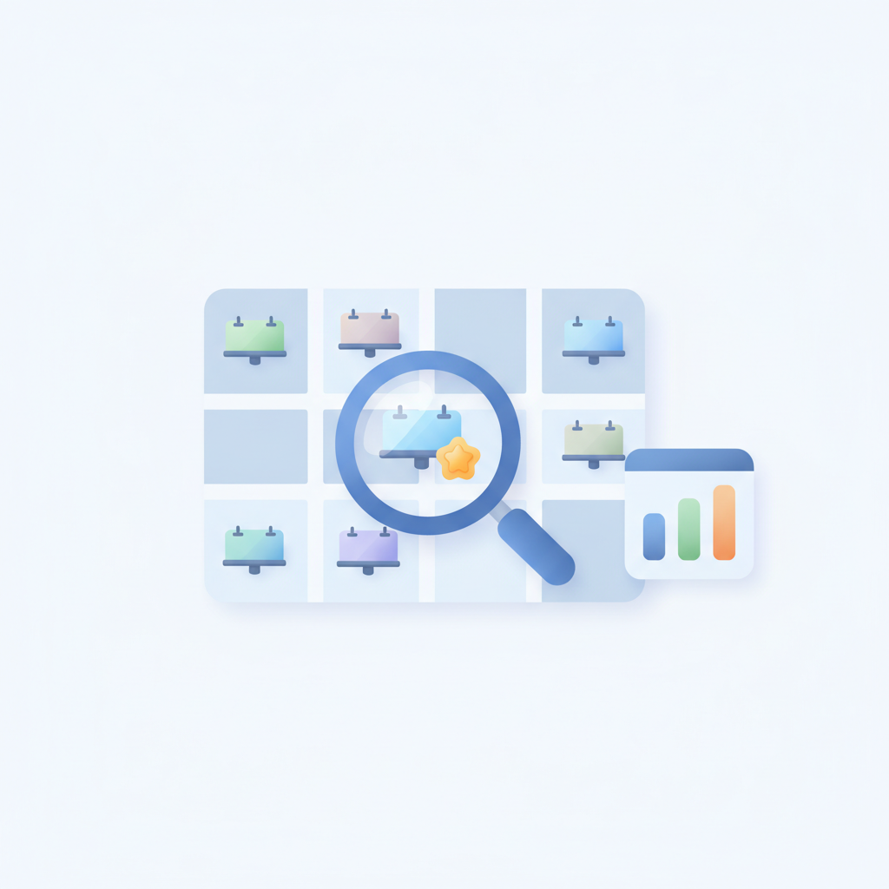

안녕하세요! 목요일 마케팅 소식 전해드립니다 😊 오늘은 10월의 첫날입니다. 헤이팝에서 전한 카카오페이 팝업 '오래오래 함께가게' 이야기가 월초 첫 소식으로 특히 잘 어울립니다. 스몰 브랜드와 40만 명의 방문객을 연결한 이 캠페인은, 결제 플랫폼이 자신의 인프라를 '상생의 접점'으로 재정의한 사례입니다. 광고보다 관계를 먼저 설계한 이 접근은, 브랜드가 어떤 역할로 소비자 곁에 있을지를 다시 생각하게 만듭니다.
AI 관련 소식도 오늘 유독 많습니다. OpenAI의 에이전트 '닷(dots)'은 사용자의 목표와 선호를 학습해 지속적으로 업무를 대신 수행하고, 틱톡은 제품 이미지만으로 영상 광고를 자동 완성하는 AI 도구를 광고주에게 무료로 열었습니다. 마이크로소프트는 소비자가 검색엔진 대신 생성형 AI 챗봇으로 쇼핑하는 흐름이 본격화되고 있다고 짚었습니다. 도구가 빠르게 바뀌고 있는 만큼, 어떤 도구를 쓸지보다 그 도구로 무엇을 먼저 설계할지가 더 중요한 질문이 되고 있습니다.
10월 첫날, 오늘 하루도 좋은 인사이트와 함께 힘차게 달려가시길 바랍니다! 🍂

1메타, 인스타그램 '라이브 방송 광고' 국내 정식 출시
메타가 기존 팔로워를 넘어 구매 의향이 높은 사용자에게 라이브 방송을 노출하는 인스타그램 '라이브 방송 광고'를 30일 한국에 정식 출시했다. 라이브 커머스가 일상적인 쇼핑 창구로 자리잡은 상황에서, 이 솔루션은 발견부터 구매까지 메타 쇼핑 생태계를 하나로 연결한다. 라방을 운영 중인 브랜드라면 팔로워 외 신규 도달 확대와 구매 전환율 제고를 동시에 노릴 수 있다.
›
2오픈AI, 업무 대행 AI 에이전트 '닷(dots)' 공개
오픈AI가 사용자를 대신해 지속적으로 업무를 수행하는 AI 에이전트 '닷(dots)'을 공개했다. 닷은 사용자의 목표와 선호도를 학습하고 여러 작업의 진행 상황을 상시 모니터링하며 필요 시 사용자 검토를 요청하는 비서형 에이전트다. 마케터의 반복 업무 자동화와 캠페인 관리 효율화에 직접 활용될 수 있어 주목된다.
›
3AI 에이전트가 마테크 도구를 스스로 선택·운용하는 시대
생성형 AI 탑재 마테크 제품이 쏟아지면서 마케팅 기술 도구를 축소하던 기업들이 다시 새 기술 도입에 나서고 있다. 스노우플레이크의 '2026 모던 마케팅 데이터 스택' 보고서는 사람이 도구를 조작하는 대신 AI 에이전트가 필요한 도구를 선택해 업무를 처리하는 방식을 차세대 변화로 제시했다. 마케터는 도구 선택의 주체가 AI로 이동하는 흐름을 전제로 데이터 인프라와 거버넌스를 재점검해야 한다.
›
4틱톡, 제품 이미지만으로 영상 광고 자동 생성 AI 무료 제공
틱톡 코리아는 제품 이미지와 설명만 입력하면 영상 광고를 완성해 주는 AI 광고 소재 제작 도구를 광고주에게 무료로 제공한다고 밝혔다. 광고 플랫폼 선택보다 'AI로 비즈니스를 어떻게 확장할 것인가'가 핵심 과제로 떠오른 상황에서, 틱톡은 AI 소재 제작 장벽을 낮춰 광고주 유입을 가속화하는 전략을 택했다. 영상 광고 제작 비용과 시간을 줄이려는 중소 브랜드에게 실질적인 대안이 될 수 있다.
›
5MS가 본 리테일 AI 전환: 검색창 대신 AI 챗봇으로 쇼핑
마이크로소프트 기술전략팀은 '마이크로소프트 인더스트리 서밋 2026'에서 소비자가 검색엔진 대신 생성형 AI 챗봇으로 쇼핑하는 사례가 늘고 있다고 진단했다. 이에 대응하려면 리테일 기업이 자사 상품 데이터를 AI 챗봇이 잘 찾고 읽을 수 있는 형태로 정비해야 한다고 강조했다. 검색 SEO 최적화처럼 AI 가독성 중심의 상품 데이터 관리가 이커머스의 새로운 필수 과제로 부상하고 있다.
›
6농심 바나나킥 검색량 325% 상승…UGC '답장' 전략의 힘
농심 바나나킥의 검색량이 최대 325% 급등한 배경에는 광고비가 아니라 소비자 UGC(사용자 생성 콘텐츠)에 브랜드가 보낸 '답장'이 있었다. 단순히 UGC를 발견하고 좋아요를 누르는 데 그치지 않고, 브랜드가 기억과 반응을 담아 적극 응답할 때 UGC가 마케팅 자산으로 전환된다는 사례다. 리테일 미디어나 SNS 운영 담당자라면 UGC 반응 체계를 성과 지표와 연결해 리포팅에 반영하는 방식을 검토할 필요가 있다.
›
7AI로 15만 개 옥외광고 매체 분석·추천하는 'SMLKOMS' 출시
옥외광고 데이터·AI 기업 SMLK가 전국 15만 개 이상의 OOH 매체를 검색·분석·추천하고 제안서 작성과 캠페인 성과 확인까지 지원하는 구독형 플랫폼 'SMLKOMS'의 오픈 베타 서비스를 시작했다. 광고주·광고대행사·미디어렙사·매체사가 함께 이용할 수 있도록 설계됐으며, 전광판·버스 외부광고 등을 우선 지원한다. 데이터 기반 OOH 매체 기획과 집행 효율화를 원하는 마케터에게 실질적인 도구가 될 전망이다.
›

브랜드 진단부터 지금 당장 해야 할 우선순위까지,
30분 무료 상담에서 함께 정리해드려요.
이미 수십 개 브랜드가 상담받았습니다.
내 브랜드처럼, 함께 고민하는 팀원의 마음으로 봅니다.
스타트업 대표·마케팅 담당자를 위한 30분